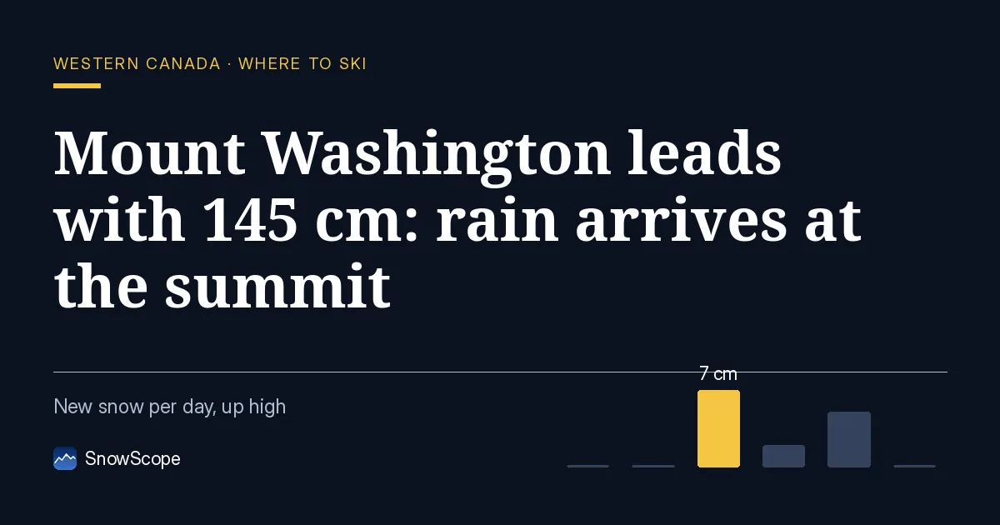

Mount Washington leads with 145 cm: rain arrives at the summit
Mount Washington Alpine Resort holds the deepest snow in Western Canada at 145 centimetres. By 11 November, the freezing level will climb to 2,680 metres minimum, rising well above the 1,569 metre summit and bringing rain to the highest terrain.
See the live snow forecast for Mount Washington Alpine Resort in the SnowScope appSnow depth, powder alerts and the 3D map, free.
The Hierarchy
Mount Washington leads by a substantial margin: 145 centimetres on the upper slopes today. Whistler Blackcomb follows at 131 centimetres, Silver Star at 127 centimetres, Mount Cain Alpine Park at 95 centimetres, and Big White at 91 centimetres.
These rankings reflect accumulated seasonal snow, not recent accumulation. Mount Washington received just 7 centimetres in the past 72 hours, while Whistler was battered by a 68-centimetre dump on 8 November alone. Mount Washington's lead persists because it has retained early-season snow—a product of cooler conditions and high terrain.
| Resort | Snow depth | New snow, 72 h | Coming, next days | Top |
|---|---|---|---|---|
| Mount Washington Alpine Resort | 145 cm | 7 cm | 7 cm | 1,569 m |
| Whistler Blackcomb | 131 cm | 100 cm | 62 cm | 2,259 m |
| Silver Star | 127 cm | 2 cm | 2 cm | 1,886 m |
| Mount Cain Alpine Park | 95 cm | 50 cm | 21 cm | 1,616 m |
| Big White | 91 cm | 3 cm | 2 cm | 2,271 m |

The Freezing Level Surge
A substantial atmospheric shift arrives mid-week. The freezing level at Mount Washington today ranges from 1,420 to 1,480 metres, well below the peak. By 11 November, it will surge to a minimum of 2,680 metres and a maximum of 3,070 metres.
This is not a marginal change; it means rain will envelope the entire resort from summit to base. For early-season snow that is thin and resting on exposed terrain, this transition carries real consequence. The implications are stark.

Vulnerability in Thinness
SnowScope reveals a hidden fragility beneath those headline numbers. The 145 centimetres clusters at the very top. At 1,569 metres, the summit holds approximately 12 centimetres; at mid-mountain (1,325 metres), just 8 centimetres; at the base (1,081 metres), zero.
When rain falls onto these thin layers, it percolates through them, bonding the snowpack and densifying it. Early-season snow often sits on bare ground or scattered rocks. Rain accelerates settlement and may create a crust. Any fresh snow arriving afterwards will struggle to bond effectively.
Whistler's Elevation Advantage
Whistler Blackcomb's greater height offers protection. Its summit reaches 2,259 metres; the freezing level minimum on 11 November is 2,170 metres. The top will touch rain, but the mid-mountain (1,456 metres) sits further below the threshold.
Whistler has absorbed tremendous recent snow—100 centimetres in the past 72 hours. Even where rain clips the upper elevations, the mid and lower slopes retain a thicker base. Mount Washington's combination of lower summit elevation and thin snow profiles makes it vulnerable across its entire vertical.
Timing and Transitions
Fresh precipitation arrives on 10 and 11 November and will transition from rain to snow as elevation climbs. Mount Washington is forecast to receive 7 centimetres over the next few days: 2 centimetres on 9 November (rain threshold), 5 centimetres on 10 November (mixed or snow at the summit), and 0 on 11 November (system departs).
The critical window is 10 November: will snow stick to rain-wetted slopes? Expect best conditions today and tomorrow; conditions will deteriorate significantly as the rain arrives.
Regional Pattern
Snow-covered area across Western Canada is contracting. The region held 333,810 square kilometres on 6 November; by 8 November, it had shrunk to 288,610 square kilometres. The forecast calls for a further decline to 265,160 square kilometres by 11 November.
Of the 57 resorts in the region, 45 currently hold snow; 43 are forecast to retain it by 11 November. This system is warming the mountains and eroding snow-covered area, not expanding it. The window for skiing early-season snow is narrowing.
Tips for skiers
- Prioritize upper slopes at Mount Washington today and tomorrow, before rain on 11 November.
- Expect lower and mid elevations to become heavy and wet; stay high.
- Whistler may offer more stable conditions thanks to greater elevation and thick recent snow.
- Surfaces on 11 November will be highly variable; expect freeze-thaw-induced ice and soft patches.
- Consult the official avalanche bulletin when going off-piste, particularly after rain-on-snow events.
About these numbers
Resort snow depths are the deepest snow on the resort's upper slopes on the date shown; they are estimates for an area, not a measurement at one point. Forecasts can change. Always read the official avalanche bulletin before going off-piste.
Official avalanche bulletins: Avalanche Canada
Cite this report
For research, teaching or the press: the numbers and charts are free to reuse under CC BY 4.0 with this citation.
SnowScope (2026), Mount Washington leads with 145 cm: rain arrives at the summit, https://snowscope.app/blog/en/2026/11/western-canada-mount-washington-alpine-resort-snow-depth-today-8-november-2026.html, accessed 2026-11-08
SnowScope (Atlas Labs). (2026, November 8). Mount Washington leads with 145 cm: rain arrives at the summit. SnowScope snow reports. https://snowscope.app/blog/en/2026/11/western-canada-mount-washington-alpine-resort-snow-depth-today-8-november-2026.html
BibTeX
@misc{snowscope2026westerncanadamountwashin,
author = {{SnowScope (Atlas Labs)}},
title = {Mount Washington leads with 145 cm: rain arrives at the summit},
year = {2026},
month = nov,
howpublished = {\url{https://snowscope.app/blog/en/2026/11/western-canada-mount-washington-alpine-resort-snow-depth-today-8-november-2026.html}},
note = {Published 2026-11-08 21:52 UTC; accessed 2026-11-08}
}· CC BY 4.0 · Methods, data and tools →
Mount Washington Alpine Resort: snow and temperature by height, this winter vs last (tools) →
Follow Mount Washington Alpine Resort
Free: a message when fresh snow is coming, and the forecast every morning.
More snow reports

Snow-covered area: 258,160 km² on 13 November, 253,880 km² today, 298,900 km² forecast for 18 November. The map is getting less white. Three inputs, …

150 cm on the upper slopes: that is why Whistler Blackcomb heads our list. Snow on the ground, snow from the last 72 hours, snow still to come: …

Whistler Blackcomb has 136 cm on upper slopes this weekend, but snow thins fast below 1500 m. Plan runs by elevation. Data from 19 November.